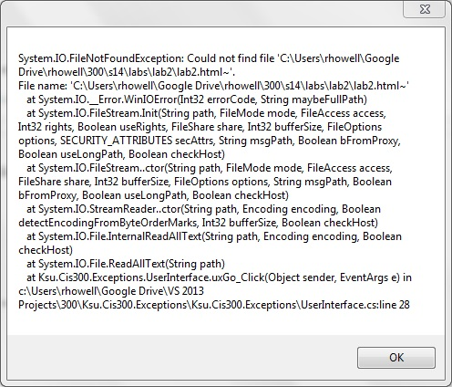

The mechanism used to handle exceptions is the try-catch construct. In its simplest form, it looks like:
try
{
// Block of code that might throw an exception
}
catch
{
// Code to handle the exception
}
If we are concerned about exceptions thrown while doing I/O, we would
include the I/O and anything dependent on it within the
try-block. If at any point within this block an exception
is thrown, control immediately jumps to the catch-block.
Here, we would place code to handle the exception - for example,
displaying a message to the user.
Suppose, for example, that we want to count the number of upper-case letters in a file whose name is in the string referenced by fileName. We could use the following code:
try
{
string contents = File.ReadAllText(fileName);
int count = 0;
foreach (char c in contents)
{
if (Char.IsUpper(c))
{
count++;
}
}
MessageBox.Show("The file contains " + count + " upper-case letters.");
}
catch
{
MessageBox.Show("An exception occurred.");
}
(See the section, "The foreach
Statement" for an explanation of foreach loops. The
Char.IsUpper
method returns a bool indicating whether the given
char is an upper-case letter in some alphabet.)
Note that we include within the try-block all of the code that depends on what we want to read. Consider what would happen, for example, if we tried to move the statement,
MessageBox.Show("The file contains " + count + " upper-case letters.");
outside the try-catch. First, we would have a syntax
error because the variable count is declared with the
try-block, and hence cannot be used outside of it. We
could fix this error by declaring and initializing count
prior to the try statement. The resulting code would
compile and run, but consider what happens if an exception is
thrown during the reading of the file. Control immediately jumps
to the catch-block, where the message, "An exception
occurred.", is displayed. After that, assuming we have made these
changes to the above code, control continues on past the
catch-block to the code to display the results. Because
the file was not successfully read, it really doesn't make any
sense to do this. The code given above, however, displays a
result only if the result is successfully computed; otherwise, the
exception message is displayed.
In the above example, the message, "An exception occurred.", isn't very helpful to the user. It gives no indication of what the problem is. In order to be able to provide more information to the user, we need more information regarding the nature of the exception. The way we do this is to use some additional code on the catch statement:
catch (Exception ex)The word Exception above is a type. Every exception in C# is a subtype of the Exception class. In this form of the catch statement, we can include any subtype of Exception, including Exception itself, as the first word within the parentheses. The second word is a new variable name. One effect of this parenthesized part is to declare this variable to be of the given type; i.e., ex is of type Exception, and may be used within the catch block.
This form of the catch statement will catch any exception that can be treated as the given type. If we use the type, Exception, as above, the catch-block will still catch any exception. In addition, the variable defined within the parentheses will refer to that exception. Thus, the parenthesized part of this statement behaves much like a parameter list, giving us access to the exception that was thrown. Having the exception available to examine, we can now give more meaningful feedback to the user. One rather crude way of doing this is to use the exception's ToString method (which every object has) to convert it to a string representation, which can then be displayed to the user; for example,
catch (Exception ex)
{
MessageBox.Show(ex.ToString());
}
Replacing the catch-block in the earlier example with this
catch-block might result in the following message:

A single try-block can have more than one catch-block. In such a case, whenever an exception occurs within the try-block, control is transferred to the first catch-block that can catch that particular exception. For example, we can set up the following construct:
try
{
// Code that may throw an exception
}
catch (DirectoryNotFoundException ex)
{
// Code to handle a DirectoryNotFoundException
}
catch (FileNotFoundException ex)
{
// Code to handle a FileNotFoundException
}
catch (Exception ex)
{
// Code to handle any other exception
}
If we don't need access to the exception itself in order to handle it,
but only need to know what kind of exception it is, we can leave
off the variable name in the catch statement. For example,
if we are trying to read from a file whose name is referenced by
the string fileName, we might handle a
FileNotFoundException as follows:
catch (FileNotFoundException)
{
MessageBox.Show("Could not find the file " + fileName);
}
Last modified: Tue Jun 5 03:50:07 CDT 2018
© Copyright 2014, 2018, Rod Howell. All rights reserved.|
|
|
|